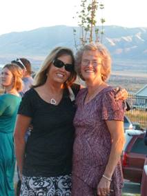
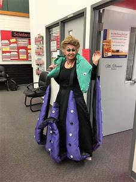
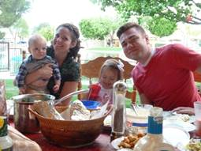
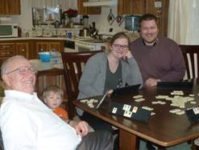
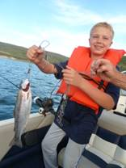
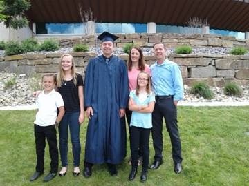

Chapter 63 - UPDATE ON FAMILY - 2013:
KEN: I am so blessed to have Ken as my husband, companion, best friend & Sweetheart.
Here are some of the things he does for me to make me happy
.
- He has always been very courteous by opening doors for me, helping me on with my coat, pulling out the chair for me at meal time and at restaurants, etc.
- When we go shopping together, he always insists on carrying in the groceries or whatever we have. If there is too much for him to carry in one trip he might let me carry a little, but not much. When we go camping I pack the food, clothes, etc., from the house and he gets the camping gear, fishing gear, etc., ready and then he packs it in the car or truck and when we return home, he carries it all into the house (at least what goes in the house) and I unpack it. We work together as a team. We do this in most things.
- When he calls me on the phone he always greets me by saying “Hi doll”, or “Hi good looking” or “Hi beautiful”, Kitten, Love, Sweetheart, Hon, etc. And when I call him, he greets me the same way. He always acts excited to talk to me.
- When he has to get up early in the morning to take a bus route, do handyman work at someone’s house, etc. if I haven’t slept well that night, he has me sleep in and he gets his own breakfast. Always if he is leaving early to go fishing, I fix his lunch the night before and he has me sleep in and he gets his own breakfast.
- Whenever he does leave early in the mornings and I haven’t gotten up, there’s a cute note for me where he tells me to have a good day and expresses his love for me. I love those notes and have kept many of them.
- He loves to show me affection by hugging, kissing and holding hands. I love that too.
- When he has time, which he has never had a lot of time on his hands, he helps me with the dishes or does them himself
- He lifts heavy things for me, feeds the animals each morning unless for some reason he can’t and then I do it. He helps me in many ways
- Elder LaGrande Richards, an apostle at that time and my dad’s second cousin, gave us good advice when he performed our marriage ceremony for us in the Salt Lake Temple, which we have tried to follow. He told us we should have a Friday night date each week even if it was just to go for a walk or go get an ice cream cone. He said we should get away by ourselves, without the children, at least once or twice a year, and at least for a night or two. He said by doing these things we would keep our love alive and grow closer together. We are thankful for this advice as it has done this for us.
- He compliments me on the way I look. He is always saying “You’re beautiful!” even when I don’t think so. He praises me for the things I do.
- When I have callings or presentations to give, many times he helps me or gives me good ideas. He did this for me when I worked at the school district office also.
- Sometimes he surprises me with flowers, or other small gifts. He always brought me flowers when each of our children were born, and many times for our anniversaries, etc.
- He likes to take me shopping on my birthday or anniversary or Christmas sales and if he sees more than one dress, pants, blouse or outfit that both of us like, he wants to buy them all for me. We can’t afford that, but sometimes he has bought me at least 3 articles of clothing
SANDI: Our oldest child and beautiful daughter
Sandi is still working at Grantsville High as their registrar. The beginning and ending of each year are the hardest and busiest times for her. She hopes to retire in about four years. She is married to Nick Drake and they have a beautiful home in Tooele. It is up on Bench View Drive, so she has a beautiful view from their home.
Sandi is always so thoughtful and kind to us, her family, neighbors, friends, etc. Sandi is active in the church at this time. She was a counselor in Young Women’s, and now is the chorister in primary. Nick occasionally comes to Sacrament Meeting with her, but doesn’t stay for the other meetings. He really isn’t interested in becoming active. We are somewhat disappointed in him as he doesn’t do much to help Sandi with the home or yard. He just mainly wants to watch sports on TV. Ken & I have enjoyed going fishing with him & Sandi, especially at Fish Lake, and we have enjoyed going to Country Creek Lodge in the mountains above Soda Springs, Idaho to go snowmobiling on those beautiful hills. We stay a night or two, usually for Ken’s birthday and Sherrie fixed wonderful meals for us and we love playing games at night. Nick does like to play games, so we get together occasionally for dinner and then play games afterward. Nick & Ken stand Sandi & I. Marbles is one of our favorite games we play with them. Sandi has two daughters and they are both married.
Sandi has so many talents. I saw her talent of music, dancing and art while she was growing up, but as she married, she developed these talents so much more. She started oil painting and is so good at it. She is so good at sewing. I think I have already written how she designed and sewed costumes for her students when she taught clogging. She now makes costumes for Halloween for her and one time she made witch costumes for her two daughters and their daughters and they went to Gardner Village for the Halloween festival there. She has made some fun costumes for her and Nick and I think her and Gary now. At Grantsville where she works as their register, they have a day, once a year, when they have a theme, and everyone is encouraged to dress up in that theme’s costumes. She has made fantastic costumes. Two years ago, the theme was on the Disney movie “Ariel” and she was asked to be Urcela. Here is a picture of her in that costume. It blew me away that she could make this costume and fix her hair and makeup to match that character. Of course, she wasn’t big like Urcela.
Sandi is like her dad, she can do almost anything. Both Sandi & Shellie take after their dad that way. They aren’t afraid to do most anything. Sandi has lots of Christmas villages with houses, churches, people, trees, vehicles, etc. She saw a wooden tree that was built like a Christmas tree and asked her dad if he would help her make it. That way she could put her villages on it. She said if he would, she would make a big, decorated, lighted wreath to put on the outside of our house as a beautiful decoration for Christmas. We were excited about that, so they went to work. She sent Ken the picture and he planned it out, bought the wood, and Sandi came out one Saturday where they both spent the day working on it. Ken spent other days putting it together. This is them making the tree, and this is the finished product.
Fast forward to 2018.
In 2014, I think it was in July, that Sandi & Nick had two condos at Lake Tahoe. Sandi invited her daughters, JaNae & Chelci and their families to go with them. Chelci, Steve & kids did go, but JaNae, Brad and children didn’t. Sandi also invited Shellie, Roy & their family and Ken & I to go also. Quint & Kevis couldn’t go, so there were 14 of us. We had a great time, but when Sandi & I were walking together one day, she said “Mom, I hope you won’t hate me, but I have decided to divorce Nick.” I told her that of course I wouldn’t hate her, I loved her very much and always would. I told her I wanted her to be happy and I knew that she wasn’t happy with Nick. Another time when we were talking, she told me that if she divorced Nick, she probably wouldn’t be active in the church any longer. I felt bad about that, but it is her choice. I know she has a testimony of the Savior and His gospel, but not strong enough to want to live it.
In 2017, Sandi divorced Nick Drake. He was lazy and didn’t help her with housework or yard work; she had to do it all. He wouldn’t go walking, biking, or any of the fun things she wanted to do. All he wanted to do was watch sports. When she married him, he was a sports editor at the Tooele Newspaper and he played sports and refereed them. I guess she should have known that his life revolved around sports. Shellie, Mike & Jeff tried to talk her out of marrying Nick. Her siblings knew that he was lazy and was all about sports. They also knew that he didn’t have any money, so they wondered why she was going to marry him. She told me later that she was tired of dating and it was hard for her to be alone and to go to family, church and other activities alone. She thought he would be good. After she married him, he didn’t even show affection to her. On their wedding night, he went to buy groceries for a stop & shop kind of store that he had been doing this for. When they went on a few trips, she said he just complained and made it miserable for her. Finally, she decided she couldn’t take it any longer and wanted to do fun things and enjoy her life while she was young.
She had known Gary Martinson because they both were involved with the Classified Association from their schools. She had met Gary some years before at a school association conference. They had become friends over the years. Gary had had an unhappy marriage and so was divorced, and with Sandi not happy with Nick and getting a divorce, they started seeing each other more. After Sandi’s divorce, Gary moved in with Sandi. Sandi didn’t want to marry as she felt that after marrying a guy, they would change, and she didn’t want to have to go through that again. Gary felt the same way. Gary is a great guy and he is so good to Sandi. He gets her flowers every week, or as soon as the others start to die. He helps her with the yard work, housework, cooking, etc. He is OCD, so is a perfectionist and is quick and good at whatever he does. Gary is always telling Sandi he loves her and wants to spend the rest of his life with her. He is always showing her affection and they love doing things together – going fishing, biking, on trips, etc. They have fun together and Sandi says she didn’t know she could be so happy. They have been together for four years, and Gary now wants to marry her. Sandi is sure that he won’t change after marriage now, so she has agreed to it. They got engaged in June of 2018 and had an engagement party at their home. They invited family, neighbors and friends and we all had a wonderful time. They have a condo in Las Vegas in December, (this year 2018), so they are planning to get married at that time. They are having an Elvis Presley impersonator wedding. I don’t know if he has a license to marry them, or if a justice of the peace will do it, but the Elvis impersonator will sing some of Elvis’s songs. I think that’s weird, but that’s their choice. It will just be the two of them as Sandi felt that with this being her 4th wedding, it could just be her and Gary. Ken and I are happy that they are getting married, now we can call her our son-in-law as it was awkward, when introducing him to other family or friends or when telling others about Sandi & Gary, to just call him her friend, partner, etc., and we worried that they were living together and breaking a commandment of God. We are thankful Gary is such a good guy and is making Sandi so happy.
JaNae was our first grandchild. Jeff is almost two years older than JaNae, so he was a “young uncle” Sandi signed up JaNae & Chelci for Clogging (a form of dancing). Later, Sandi helped teach as she has always had a talent for dancing. She later took over the studio when the owner wanted to sell it. JaNae was a “natural” at this dancing, like her mom, and she had such a beautiful smile. JaNae and Chelci were both cheerleaders in high school and both were in beauty pageants. They both are married to wonderful men.
JaNae has a beautiful smile and is a beautiful woman. She married Brad Caires and they have three children – Dawson, Kennedy and Emma. (This picture was taken in 2016). Dawson was 13, Kennedy was 11 and Emma was 9. They are all born in March, two years apart.
JaNae taught clogging in Grantsville, like her mom for a period of time, and was very good. I went to watch her one time when she was teaching her oldest class, which Kennedy was in that class. JaNae has that talent for dancing like her mom, and it was fun watching her dance as her class followed her.
Brad was on high pain pills because of terrible pain from his operation that resulted from a fight with a burglar who was in their garage stealing expensive equipment and tools that Brad had there. He also had arthritis from hurting himself while as a youth riding motorcycles. Brad had had a good job at Tooele Army Depot disarming explosives, so they bought a beautiful home in Stockton, a nice truck and other toys and furniture. Brad quit this job to go into business for himself, making special tools for mechanics. He was doing pretty well, until this happened and he couldn’t work anymore. Brad is a good man and a good husband and father, and it is sad to see how his health has deteriorated since all this has happened. They ended up losing their home and practically everything they had. It was a hard time for them. Bishops helped them with church welfare and got them into a trailer home in Grantsville.
JaNae and her Mom had problems with each other. It was a big problem and they hadn’t communicated with each other for 3 or 4 years (Maybe longer, I don’t remember) I was so sad as I love them both. JaNae wouldn’t let her mom see the grandchildren, and that was so hard on Sandi, but also the children.
I had kept in touch with JaNae and had called and talked to her several times. We had good visits, but if ever she slammed her mom, I came to Sandi’s defense as Sandi has been a good mother and grandmother and she is my daughter. I had invited JaNae and her family to come here for dinner and one-time Ken and I took dinner out to them in Grantsville and we all had a picnic in the park.
It is now 2018, and I took this picture when we had our picnic in the park. At our last Thanksgiving dinner at our stake center here in Roy (2017), JaNae, Brad and the children came. After that terrible time, JaNae wouldn’t come to any family parties or activities as she knew her mom would be there and she wouldn’t come if her mom was coming. Wow! This was hard on all of us, but this time they came and we were all so happy to see them again. Sandi and Gary, JaNae & Brad, Chelci & Steve and I think some of the older children all played games together, after our dinner, and they laughed and had so much fun together. This made me so happy. This year, JaNae called and said the missionaries were teaching Emma, as Emma hadn’t been baptized and was ten years old, and asked if we could come to Emma’s baptism and if Ken (Emma’s great grandpa) could baptize her. Of course, we were thrilled.
JaNae called her sister, Chelci, and asked if their family could come also. I loved hearing that Steve’s family always has their family party every year, on the Saturday that Emma was to be baptized. Sandi told me that when Chelci told Steve about it and asked him what they should do, that he said “My family has this party every year, and Emma’s baptism is a once in a lifetime event, so we need to go support her and her family.” I was so proud of Steve and thankful he felt this way. I think Chelci asked JaNae if her mom could come also, and she said “yes”, so we all came and it was great to be all together again. The baptism was special. JaNae had asked if I would give one of the talks, so I gave the baptism one, and one of the Elder’s who taught Emma gave the talk on the Holy Ghost. Sandi played the piano and Chelci lead the music. Ken baptized and also confirmed Emma and gave her the gift of the Holy Ghost. I had made a Texas cake and passed that out to all who attended the baptism, and there were many. We were thrilled that so many of the ward had come to support them, and also other missionaries came. Chelci’s family, JaNae’s family, Sandi & Gary and Ken & I all went out to eat afterwards and as we were all leaving, we gave hugs as we said our “goodbyes” and I saw Sandi and JaNae hugging and telling each other that they loved her. That surely made me happy as I have always wanted them to be close again and love each other.
Chelci is a beautiful and special woman. Chelci married Steve Holste in the Salt Lake temple. We were there with them and it was a beautiful ceremony. Of course, Sandi and Terry were there also and Steve’s parents and brothers and sisters-in-law. We all went out to lunch afterwards. They had a beautiful reception. Chelci & Steve both have strong testimonies of the gospel and are active in the church. They have four children now (2018) – Nathan, Addison Mae “Addie” the twins - Luke & Jacob.
Chelci & Steve are good parents. Chelci went to college and became a dental hygienist. She got a job with a dentist in Grantsville and now with having her family, she only works one day a week. After the twins were born, Sandi took care of them while Chelci worked one day a week, and helped her with them whenever she could. They are so cute, but so are Nathan and Addie.
Steve has a good job and they bought a beautiful home in Grantsville. Chelci is a wonderful housekeeper and homemaker, like her mom.
Chelci has a beautiful voice and sings whenever she is asked. She has sung at queen pageants, Tooele Army Depot Officer’s Club parties and program, church sacrament meets and other activities and program, the “Old Folk’s Sociables”, the County Fair, and other community activities. Sandi has accompanied Chelci on the piano for most of Chelci’s performances. (This picture is at Sandi’s home when her and Chelci were practicing for Chelci to sing in her Sacrament Meeting. Ken & I were there visiting, so got to hear them.) Ken & I love to go out and watch Chelci sing whenever we know about it and can go.
Chelci is in a band called “Exit 99”, which is the exit turning off the freeway into Tooele County. Chelci is the lead singer and plays a guitar. They practice every Friday night. We have gone out to some of their performances, and enjoyed listening to them. I have always loved hearing Chelci sing from the time she was young.
On their 10th anniversary, Chelci asked Ken and I if we could tend the children while they went on a cruise. Sandi had a conference, with her work, in St George, so couldn’t tend them and neither could Steve’s parents. We were going to Shellie’s to spend a couple of weeks with them, but we postponed it a week and said we would do it as Chelci & Steve needed this time together. The children were so cute. I was afraid the twins wouldn’t be good for us and really miss their parents, but they were great! It was cute to watch them play. They went down for naps really good, as long as they had their own binkie, and they knew which one was theirs. They were good while we changed their diapers, they ate good. We took them for walks in their stroller. We watched them play in their play room and had fun with them. Sometimes, if I was downstairs cleaning up or doing dishes, I would hear them fight, but by the time I got up there, they were fine and having fun together again. Nathan was so good. He is a cute boy and is growing up so fast. He is good in sports. Addison “Addie” Mae is their only daughter and she is so sweet and pretty. We loved being with these special great grandchildren and getting to know them better. Nathan was sick and so was luke. Both Ken and I got sick towards the end of the week, and Chelci felt bad that she had to leave them when they were sick, and that we got sick, but we did fine. Ken had the roughest time, but we were glad we could tend these children. Steve got sick, from the kids too, while they were on their cruise, so it wasn’t as fun for them as it could have been.
SHELLIE: I am here in Arizona with Shellie, Roy and their family. I flew down on Friday and will be going home on this coming Friday, the 20th. My grandson, Quint, their 2nd oldest, was going into the military and since I hadn't seen him for quite a while as we hadn't been down for a year, and when Shellie came up, Quint and Kevis didn't come, the last couple of times, as they had jobs here. Shellie said this would be a great time for me to come. Ken couldn't come because he is driving a school bus route so he told me to fly down. I had only planned to be here a week, but Shellie & Roy asked if I could stay an extra week so that they could go on a week vacation to San Diego (where they were planning to take Quint) as their youngest son, Jase, has Asperger’s and is on a special health diet, even stricter than the one Ken and I are on, so they wanted me to be here with the boys so Jase could get the food he needs. It turned out that Quint didn't go into the military. He had a leg injury from skiing and as he met with the Marines to work out before going into basic training, it started bothering him. Since the military has been cut back so much, they really didn't need him, and didn't want him if he couldn't do what he would need to do in the Marines, so they let him out. When Shellie told me, I thought maybe I should try to change my flight to our Christmas vacation so Ken could come with me, but it cost way too much to change it, so I came anyway, and I'm glad I did.
Shellie & Roy left on Saturday and met up with Sandi & Nick in San Diego. I'm glad the two sisters and their husbands could have this time together. They were able to get a condo with two bedrooms. I didn't spend a lot of time with my grandsons the first week, as I knew I would be able to this week and the boys were gone to school, work and Karate. I did more with Jase, however.
This picture is of Shellie & Roy’s four sons at their eldest son, Garrett’s temple wedding. From top to bottom: Garrett, Quint, Kevis & Jase.
This week I have had great conversations with Quint. He is a special grandson. He didn't stay on his mission and told the mission president that he didn't have a testimony, he believed it was true, but couldn’t say it knew it was true. They wanted him to say he knew it was true. He was in Washington DC and had a Tongan companion as his trainer and that didn't work well. Quint goes to the Young Adult ward each Sunday, and even last Sunday, when his parents were gone, and he had to work from 4 am until 10 am at Target unloading trucks, he still came home and got ready and went to church. I was surprised, but thrilled. We had Family Home Evening Monday night and he had a great attitude and all three of the boys participated and we had a great evening. I gave a lesson on the Holy Ghost and gave some experiences; we sang songs, prayed, played Pictionary with using scriptures stories and had refreshments. Mine and Jase's was a healthy snack. I am enjoying this time with these special grandsons. They say I am spoiling them, but I told them that I don't get the opportunity to do that very often, and besides that's what grandmothers like to do.
I have enjoyed this time with Shellie, Roy & the boys as I don't get to see them enough. However, Shellie came up three times this past year and that was great! Roy came up with her & Jase once. She mainly came up the first time to get Jase and herself into Nancy, our nutritionist, to see if Nancy could help Jase. Nancy told her to read the "Gut and Psychology Syndrome" Natural treatment for Dyspraxia, Autism, ADD, Dyslexia, A.D.H.D., Depression, Schizophrenia, etc. by Dr. Natasha Campbell-McBride MD, MMedSci(neurology), MMedSci(nutrition). Shellie bought it and read it and realized she needed to follow this diet even though it is so hard, but she could tell from reading the book, that this would help Jase. Nancy tested Jase, Shellie & Sandi and found they are all allergic to Gluten, Dairy and Sugar and that processed foods are so bad for us, so not to use any. Sandi is on our diet, but Shellie opted to do the GAPS diet. Shellie is great at fixing all this food from scratch and doing exactly what the book says to do. I thought I would be going to the Health Store to buy the bread and other items I need for my diet, but instead I am eating the foods she is fixing for herself and Jase. It's different, but some is pretty good. The book says if they eat this way for two years, they will be over allergies and their guts will be healed. They will be able to add more foods in gradually. However, they will still eat healthy and not eat junk food, pop, or much processed foods. With eating this way, I am feeling good and I'm not hungry between meals like I used to be, even though I don't eat a lot. They have been on this diet for 8 weeks and Shellie has lost weight and looks great. Her skin is much better. Nancy had commented that her skin was bad. She was allergic to wearing any jewelry and now she isn't. The best thing is that Jase is doing so well. He was very picky before and I worried that she wouldn't be able to get him to eat healthy, but after explaining to him about what has happened to people because of eating junk food and processed foods and how he will be much healthier and happier if he eats this way for two years, he decided he wanted to do it. He is great at it and he is doing much better with his Asperger’s. His teacher called Shellie and told her that where they used to have a tutor for Jase to keep him on task and help him so he wouldn't fail the tests, etc., now they don't have to and that his grades have improved dramatically. The teacher said "Whatever you are doing, keep it up as it is working." We are all thrilled about that. One day at home, I called the family and Jase answered and said "Grandma, I didn't used to like the meals Mom fixed, but now I look forward to them. She fixes good healthy food."
 Jase: Jase and Shellie are off the Gaps diet. Shellie
thought it was really helping Jase and she at first, but now she isn’t so
sure. It was a lot of work and expense, so they have gone back to eating the
way they used to eat. They still eat pretty healthy, but not so strict as the
Gaps diet was. Jase is a sweet boy, but with Asperger’s, they don’t have
social skills so the kids at school and in the neighborhood just pretty much
ignore him. Jase likes to be by himself and on his computer. Shellie
home schooled him during his Junior High School years, but Garrett talked her
into getting him registered in High School as he felt it would be better for
him. The home-schooling classes on the computer were harder than what they are
at the high school, so Jase does well. He got good grades, but he was on his
computer doing schoolwork and homework from morning until night. He didn’t
even have a break on weekends and holidays, so that was hard on him and his
parents. This is much easier for him now and he has time for himself. He
loves “Mind Craft” on the computer and other programs. I bet he will do well
after he graduates if he gets a job doing these things as he is a whiz on
them. When Shellie & Roy go on their trips, Jase wants to stay home. He
fixes his meals and keeps the house clean and they can trust him.
Jase: Jase and Shellie are off the Gaps diet. Shellie
thought it was really helping Jase and she at first, but now she isn’t so
sure. It was a lot of work and expense, so they have gone back to eating the
way they used to eat. They still eat pretty healthy, but not so strict as the
Gaps diet was. Jase is a sweet boy, but with Asperger’s, they don’t have
social skills so the kids at school and in the neighborhood just pretty much
ignore him. Jase likes to be by himself and on his computer. Shellie
home schooled him during his Junior High School years, but Garrett talked her
into getting him registered in High School as he felt it would be better for
him. The home-schooling classes on the computer were harder than what they are
at the high school, so Jase does well. He got good grades, but he was on his
computer doing schoolwork and homework from morning until night. He didn’t
even have a break on weekends and holidays, so that was hard on him and his
parents. This is much easier for him now and he has time for himself. He
loves “Mind Craft” on the computer and other programs. I bet he will do well
after he graduates if he gets a job doing these things as he is a whiz on
them. When Shellie & Roy go on their trips, Jase wants to stay home. He
fixes his meals and keeps the house clean and they can trust him.
I left this note for Shellie & Roy. Dear Shellie & Roy, Thanks for this opportunity of being with your special sons. They are good boys and I have loved spending this time with them. They all did their chores on Saturday without any complaints. We had Family Home Evening on Sunday evening. Jase conducted, Kev had the songs, Jase and Quint said the prayers, I taught a lesson on the Holy Ghost, Quint did the refreshments (root beer floats for he and Kev and the strawberry ice cream for Jase and I. We played Pictionary with scriptures stories using the white board and markers. They are really good at it. I got it a couple of times, but I had to be quick to get them. They all participated and had great attitudes. We have had scripture study some nights when I remembered. They always knew to have Family Prayer and that is great! I was nervous about driving the truck when I came down here, but thanks, Shellie, for letting me drive it while you were here. That made it much easier and soon I wasn’t nervous, but I was still really careful and alert as I sure didn’t want anything to happen to Jase or me or the truck. Jase did his homework right after school without any complaints. I went over this week’s spelling words with him and he knew all perfectly except for just a couple. You will notice on top of your mail that there is a paper telling about the book report Jase is to turn in by Oct 15th. I spent a little over $20.00 for more groceries, so here is what is remaining. I have had wonderful conversations with all of them, especially Quint. He is so easy to talk with. Quint & Kev have helped me with the apps and updates on my ipad, for which I am very thankful. I have appreciated the respect and love they have all shown me. Quint & I watched “The Gladiators”. It was intense, but I loved the story and moral. Kev had to work so he didn’t watch it with us. I watched “Kora” with them and liked it. I also like a lot of their music and enjoy hearing Kev play his guitar and do his karate. Jase and I took Tasha with us for walks, especially down to pick up your mail and then we walked further. Jase has loved his airplane and has flown it several times at the park. I have gone with him some of the time (when it was cooler in the evenings) and Quint went with us one evening and Jase let him fly it. Jase and I have played some games together and had fun. He is such a cute boy. I have kept Jase on his diet, but he is good to eat the foods I have prepared. He especially liked the hamburgers and spaghetti I fixed for two of the evening meals and sausage and three eggs for breakfast. I used your Pamela’s gluten free pancake mix and made pancakes for Quint, Kev and myself and toasted the other pancakes for Jase. Jase doesn’t care for them very much and neither does Kev. Kev told me thanks for making these pancakes, but Quint says he likes your diet pancakes. He thinks he is the only one who does. Quint is excited to move into that home and work out his schedule. He put in applications around to work a second job and it looks like he will probably get one at Kohl’s. I think he will do well. He told me he does want to get into college when he gets the money. Kev is a cute boy also and just needs attention, praise and love. We all need that. I think that’s why Kev loves to be with Quint so much is that he knows that Quint loves him and accepts him for who he is. They know that both of you love them too, but sometimes brothers as well as sisters (like you and Sandi) can be really close and love to be together. I know Mike and David have always shared a special closeness like you and Sandi do now. Anyway, I have missed Dad, but I told him thanks for being sweet to let me come because I needed this time with this special family, that I don’t get to see often enough. I sure love you, Mom
Fast forward to 2018:
Kevis: He had moved out since he wasn’t going to college. His parents had told him they would pay for his college, if he would go. He is such a smart young man that he could have gotten a scholarship if he had turned in his homework in high school. After he took his ? test at high school, he got such a high score that colleges and universities were calling to have him come to their school. Shellie said that he even had more than Garrett did. Kevis just wanted to sleep and play video games, so Shellie & Roy told him that if he wouldn’t go to college, then he better move out on his own. Kevis has an inferior complex. I could see that, when I was tending them when the children were young, while their parents went on trips. I would walk him to school and his friends would call out to him, but he wouldn’t acknowledge them. We never know why our children or grandchildren have these darn inferior complexes as we as parents feel we give them praise and love. Sandi had one too and yet she was so pretty, talented and smart. Anyway, Kevis finally saw that his life wasn’t going anywhere. He had a job in a men’s clothing store, but that wasn’t anything great and he didn’t have good hours, so he decided to enlist in the Marines. He passed the basic training easily as he had learned Karade. He is a strong young man. In fact, he has always been strong. I remember when they had their pool at their other home in Chandler, and I was in the pool with Kevis, and we were teasing each other by splashing water at each other. I thought I would duck him, as he was only about 8 or 9 years old. That was the wrong thing to do as he about drowned me. I couldn’t believe how strong he was. He takes after his dad as Roy is very strong. I remember Shellie and I took on Roy years ago, and he had us both down so quickly we didn’t know what had happened. Anyway, Kevis is stationed in Okinawa. He was happy to be transferred there as he and Quint have been studying Japanese and now he can speak it with the natives when he goes off the base. The picture of him with his parents above, was when he graduated from his schooling.
Kevis was lost. When Kevis was a scout and went to scout camp up in the mountains. They were playing a game where you and a buddy run and hide and then two of them are left to find the others. Kevis got separated from his buddy and went further than he should have and got lost. His mother had told him that if he ever got lost, he should stay where he is, so he can be found. He did, although he called out and tried to look around. After a while when the scouts couldn’t find him, they told the scoutmaster and they all went looking for him. Finally, the scoutmaster called the bishop, who called Shellie & Roy and Rescue people. Everyone, including neighbors, family and members came to start looking for Kevis. Shellie called me to ask if I would pray for him. I surely did, but I hated to wake Ken as I knew he wouldn’t sleep and he needed to go to work the next morning. I didn’t sleep and kept praying hard. They had to call off the search late that night and continued it the next morning with helicopters helping also. Kevis spend the night shivering as it was cold in the mountains and he only had on a light jacket. There were bears in that area, which Shellie didn’t know about until later. (Hope I get this story right). Finally around noon the next day one helicopter spotted him. He had made a large S.O.S. with big rocks. Without water, he finally drank some from a dirty pool or puddle as he was so thirsty. He was glad to be found as all of us were, especially his parents and siblings. When our children found out the next morning (while he was still lost), they called each other and headed down to Arizona to help search for him. Sandi went with them too, I think. Ken and I wanted to go too, but Shellie had told us not to come as it was too far and they were many there searching for him. When I told Scott this, he said: “I don’t care what Shellie said, he is our nephew and we are coming to help search for him.” When Shellie heard that, she was really touched. We have a close family and love and want to help each other.
Shellie, Ken and I went to the Gilbert temple and also the Phoenix temple when we were down another time. This is a picture of Shellie & I at the Gilbert Temple. We love to come visit this special family and we like to come during March as that is when the orange blossoms are out, and they smell heavenly. The weather is great at this time of year also.
Garrett: We enjoy Shellie & Roy’s grandchildren, Maggie and Damon, Garrett & Nora’s children. Of course, we love the parents, Garrett & Nora and love being with them also. Each time we come, Garrett, Nora and children come over to be with us as often as they can, and we love being with this special family also. Garrett joined the Army to get his dental schooling since it doesn’t cost when you go through the military. He graduated as a captain. The schooling is really hard and the tests to be certified and get your license are very tough, but Garrett is a smart young man, very dedicated and he got really good grades. They were just transferred to Colorado. They love it there, but Garrett’s allergies are bad. They just had another baby girl and they named her Aubrey Liesl Seymore.
When Garrett was interning for his dental degree the summer & fall of 2017, he had one in Salt Lake so he asked if he could stay with us the four weeks he would be here. We were excited to have him stay with us. He said Nora and the children could maybe come one week, and we were excited about that also. It was so fun having them all here with us that one week. (This picture is of Damon when he was staying with us while Garrett went to Salt Lake for his internship. Damon like Great Grandpa’s shoes. Then Maggie did.)
Quint was here from May until his semester at the community college in Salt Lake was finished and then he left, and Garrett, with his family came the following week. I took Nora and the children to the park one day while Garrett was interning and we had a fun time. We also went to the Air Force Museum and other places during the following days. I took them down to Paige’s so they could get together, since they are about the same age and hit it off from the time they first met. We had a fun time. One afternoon Nora went down to visit her sister in Spanish Fork and one night, she, Garrett and the children (not sure if they left Damon with us) went down to watch her sister in a play.
Ken and I were going to Fish Lake with our friends, Diann and Ron Graff the following morning, and Nora and the children were leaving to go back home. I hated to not be able to take them to the airport, but she called Uber and a driver came, just before we left, to take them. We left food for Garrett and left him for that week. Our sons and some grandsons were getting together for a football game at David & Shauna’s home, and they invited Garrett to come and be with them. He did go and had a good time. I was happy they invited him as he doesn’t get a chance to see his uncles and cousins often. I also invited Chelci, Steve and their children one Sunday afternoon for dinner and visiting, so Garrett could see his cousin, Chelci, again and her family. We enjoyed having Garrett with us. We had good visits with him, and he was always so helpful to do anything he thought needed to be done. We didn’t have to ask him, he just did it. He is such a good, wonderful grandson.
He and I had a good conversation one evening about why he had left the church. He said it was because of feelings, and that everyone has feelings, that people of other churches feel that their church is the true church. I didn’t argue with him, but bore my testimony to him. Nora has a strong testimony and Garrett does go to church with her, mainly to help her with the children. He went to church with us also, at least to Sacrament Meeting.
Quint: Quint is such a good young man. He has a cute personality and is so easy to talk to, he always has been. He went on a mission, and loved the MTC, but on his mission to Washington DC, he was told that he had to tell the investigators and others that he “Knew the church was true, that Joseph Smith was a true prophet of God and that our present prophet was a true prophet of God and that the Book of Mormon was true.” He told them that he “Believed the church was true, etc.”, but that he couldn’t say for sure that he “knew” it was true. He had hoped to gain a stronger testimony on his mission and then be able to say it was true. They kept insisting that he say it now, so he got upset and told the mission president he wanted to come hope. At least this is what Shellie told us. She called to ask if we could send a email to Quint to help persuade him to stay. We did and Quint wrote back saying he had always tried to please everyone, but now he was going to please himself – so he came home. Shellie was really sad, but she loves him as we do and he has his agency. He went to young adult meetings at first, but now he doesn’t.
Quint was working at Target for some time, and finally decided his life was going nowhere, so wanted to go to college. He doesn’t like the sun and heat, and he loves Utah, so he called and asked if he come and stay with us for a couple of weeks or so until he could get an apartment close to the college and some roommates. He told us he wanted to pay us for him staying here. He wanted to pay us $200 or more a month, but we told him that we would only take $100. We told him that, of course, we would love to have him come stay with us. And we did love him being here with us. It didn’t work financially for him to live in Utah as he had hoped to get grants and school loans, but since he was coming here from out of state and paying three times the normal school tuition and he couldn’t get the funding he needed, he was only able to stay here for the one semester. He loved the school, the campus, his classes and he made several friends. He was always so appreciative of the food and everything we did for him. He always told me that the food was so delicious, even when I didn’t think it was. He was always willing to do anything we asked him to do. When we were packing to go to Jeff’s for a few days, I couldn’t believe all that he could carry in one load. I guess he is strong, like his dad and brothers. He would help me in with the groceries and carry most, if not all, in one load. I sure appreciated that. I loved, when he would come home from college, and tell me about his classes and what he had learned. Quint would mainly spend a few minutes visiting with us and then go into his room to do his homework. He would come out to eat dinner with us and then go back to finish his homework and then call Kevis and he and Kevis would play video games together into the wee hours of the night sometimes. He and Kevis have always been close, and even now that Kevis is stationed in Okinawa, they have worked it out that when Kevis is back in his barracks, he can still do these games with Quint. Kevis came home on leave and it was about the time that we were having our family vacation at Pinnacle Peaks Resort, which Sandi and Gary had reserved for our family, so he came to Utah with his family. Quint and Kevis only came up one afternoon and then they left the next morning to come back here so they could spend time together alone. All the family was disappointed that they didn’t spend more time with all of us as the aunts, uncles and cousins don’t get to see them often, but I could also understand that they don’t have much time to be together since Kevis is in the Maurine’s.
While he was here, I invited David & Sierra and Paige and Garrett and their little ones to come have dinner with us and spend the evening, so Quint could be with these cousins.
Mike went into the Education Field and became a Resource teacher in Montana, but Becky wanted more than two children, David & Tayler Paige, and Mike knew that he would need to make more money to support a larger family, so he and Becky decided that he should go back to BYU and get his master’s degree. He is a smart guy so was able to get into a fast, hard Master’s program which he would complete in one year instead of two. It was hard, but he did it.
They have had two more daughters, Maddi and Jessie. Jessie was born while we were on our mission to the Philippines. In fact, she was born about two weeks after we left.
Maddie is on the left and Jessie on the right. I had taken them to McDonald’s for ice cream and they were playing on the play equipment there.
David came too.
Mike got a job as an assistant principle at a junior high school. Later he was a principal at a new junior high which had about 3000 students. That was hard. The next year they changed boundaries and the student population went down considerably so this was a much easier year for Mike, besides he knew the staff and teachers and it was his second year there. The superintendency wanted him to come to the district as one of their resource directors as he knew the law so well. He told them he would for one year, but then he wanted to go back to a school. He did, and the following year was given a assistant principal ship at another junior high school. He is now the principal of Orem High. It is a beautiful school and he is a great principal. He loves the students, yet they know if they don’t obey the rules he can give out discipline too, so they like and respect him. He supports them in all their games and activities. He is really busy, and it is stressful too especially as the world is becoming more wicked. There have been shootings in schools, so Mike took training and has a permit to carry a gun. He says he would use it too if he had to, to protect his students and teachers. I worry about him because of the stress and because he is a big guy, he could have a heart attack. He had told me before that he didn’t think he would live beyond 40 years old. He will be 44 on the 28th of this month (April 2013.), so thank goodness, he has lived beyond that. I hope he can live to see his grandchildren. HE DID!
Mike is now at the district office, and it is much easier on him. He loved the students at Orem High and most of the faculty and staff, but it was very stressful. (Tell about Mike working with the district and police department to have video surveillance to keep the students and faculty safe.)
David: Mike and Becky’s oldest child, David, served a mission to Africa and just returned home in February. He is working two jobs now and plans to attend Utah State this fall.
I loved it when Mike & Becky would ask Ken and I, or just me when Ken was working or had other commitments, to come and tend their children while he took Becky with him to St. George for a school conference, or on some other trip for their anniversary, etc. I don’t see this family as often, so I am always happy to go and be with these children whenever I can. When David & Paige were young, I would take them to the park or around the block pulling them in their wagon or sometimes David would ride his trike. As they grew older and as the other sisters came along, we would usually take them bowling at least one night while we were with them. I’m not a good bowler, I usually put mine in the gutter as I have a curve, and can’t seem to get the ball going down the alley straight as it curves to the side and drops into the gutter. Sometimes I have done better and even gotten strikes. It was fun watching the children bowl. We would usually stop and buy some ice cream at the store and go home and eat some. When David & Paige were at school, and Maddie and Jessie were young, I would take them to the park and sometimes we would bring a picnic lunch.
When David was about 15, my cousin, Randy, asked Ken if he would reroof their cabin up in the Unites. It was a really steep roof, so he knew he needed help. David was a big boy and pretty strong, so he asked David, also Mike & Becky, if he could help him do this roof and Randy would pay him. David wanted to do it, so Mike & Becky agreed. I asked if Paige could come also, and her and I could spend time together. It would take several days and that was the time of Paige’s birthday, but she came anyway.
 I hated to watch David and Ken do the
roof as it made me nervous. Ken had made some roof jacks or roof scaffolding
so they could be on that steep roof, but it was scary. One time they were
almost to the top, the 2x4’s that were holding the jacks up from the ground,
buckled allowing the jack with the scaffolding boards to start sliding down the
roof. Both Ken and David instantly grabbed for the ridge of the roof and David
then turned to Grandpa and said: “What do we do now?” Grandpa said “Go hand
over hand moving towards the still permanent scaffolding and they were then
able to get to the ladders and climb down safely. As they got to the ground,
David made the comment: “Grandpa, I didn’t think I could grab anything so
fast.”
I hated to watch David and Ken do the
roof as it made me nervous. Ken had made some roof jacks or roof scaffolding
so they could be on that steep roof, but it was scary. One time they were
almost to the top, the 2x4’s that were holding the jacks up from the ground,
buckled allowing the jack with the scaffolding boards to start sliding down the
roof. Both Ken and David instantly grabbed for the ridge of the roof and David
then turned to Grandpa and said: “What do we do now?” Grandpa said “Go hand
over hand moving towards the still permanent scaffolding and they were then
able to get to the ladders and climb down safely. As they got to the ground,
David made the comment: “Grandpa, I didn’t think I could grab anything so
fast.”
Paige and I had fun going for rides on Randy’s four wheeler, going for walks, playing games, cooking meals and visiting. I made her a birthday cake and had gotten her a couple of presents, so we celebrated her birthday together.
 Now 2018, David met a beautiful girl named
Sierra and fell in love. They have a cute little son, Henry, who is now
4 years old and they just had a beautiful little daughter, Charlotte, who they
call “Charlie”. David & Sierra are good parents. They love each other and
their children. David graduated from Utah State University in Computer
Science. He worked part time for the university fixing their computers with
the right software, etc. He now has a great job working in Logan. Sierra is
also going to Utah State University and will graduate this May, I believe.
Now 2018, David met a beautiful girl named
Sierra and fell in love. They have a cute little son, Henry, who is now
4 years old and they just had a beautiful little daughter, Charlotte, who they
call “Charlie”. David & Sierra are good parents. They love each other and
their children. David graduated from Utah State University in Computer
Science. He worked part time for the university fixing their computers with
the right software, etc. He now has a great job working in Logan. Sierra is
also going to Utah State University and will graduate this May, I believe.
On Sunday, May 6th, 2018, our Grandson David Michael texted me, asking if it would be possible for me to come up and help Sierra with the baby this coming week. We can’t this coming week as we promised Jeff & Gail’s children that we would come up to their school programs and Grandparent’s Day this coming week, but we told him I could help the following week. He said that would be great and that Sierra’s grandfather could help her this coming week
On Monday, May 21st, we left Jeff & Gail’s home and drove to Logan to help Sierra, the new baby and little Henry. Ken had decided to come with me as he was concerned that it would be too much for me, and I was sure glad he did. We had an enjoyable time. The baby is so cute and just mainly sleeps. Henry is so full of life and fun to be with. Ken took him outside in the backyard where he blew bubbles, that Henry just loved to chase and pop. He is sure full of energy. I drove Sierra, Charlotte and Henry to a Doctor’s appointment that afternoon. Ken was on his computer, while we were gone, and when David returned from work, Ken enjoyed visiting with him. David is enjoying his work and the company that he is working for. They seem to have good benefits and the employees that he works with seem to feel good with the company. When Sierra, the children and I returned, we told David and Ken that the Doctor said that both Henry and the baby are doing fine. I had made a casserole for dinner, and Ken made a tossed salad, to go with the casserole. David asked Ken some questions about past experiences, which lead to some stories. We started to bed shortly after 9PM.
Tuesday, May 22, 2018: Everyone seemed to sleep quite well last night. David was up and gone to work early. Henry had Ken go outside and blow bobbles again this morning. I made lasagna for dinner this evening. After David returned home from work, he and Ken got visiting about Ken’s experiences in programming. Of course, that led to some stories. David asked him about his journals and asked if he would give him a copy of his journals that he has on his computer. Both Ken and I have a little concern about that, as sometimes our concerns about our family are expounded on. But we hope that not only will our family know his concerns, but also our love for them.
Wednesday, May 23, 2018: I didn’t sleep as well last night, so am sure glad that Ken stayed with me, so he could help out, and he surely does. He helped her prepare breakfast this morning. David gets himself off to work as he starts work at 6AM and works a 10-hour day. This way he has Friday’s off. After breakfast we took Henry for a walk and found the play area. There Henry had fun on the toys and even had Grandma and Grandpa on the toys with him. Sierra’s mom brought lunch in for us, so that was a nice treat. This evening I made South Western Chicken in the crock pot. After dinner, David put a Bowling Game on his computer, then Henry, David, Ken and I played a game of bowling. I won the game. After Henry went to bed, David, Ken and I played a game of Rummy at which David and Ken tied, although we only played three hands. We quit as David needed to get to bed.
 Thursday, May 24, 2018: We again made pancakes and scrambled eggs for breakfast. Henry is sure a very bright child, and because of it, he almost seems older than he is. Between playing with Henry and helping me, he did some Indexing. Henry wanted to play with a race car set, so Ken got down on the floor and put it together for him. He was tired when they quit and got up off the floor. We got the car packed and ready to go. David was late coming home from work as his boss needed some equipment moved and asked for David’s strong help. After dinner, Mae and I came home.
This is a picture of them at our home, before little Charlie was born. We love this special family.
Paige: Their 2nd child, Taylor
“Paige” is going to Utah State University now and getting straight A’s.
She is a beautiful and smart young woman, and works hard. She is going into
interior design and during her senior year, she got a job in that field, but in
the summer, she received another great opportunity to work for a contractor
during interior design for the homes he was building. He really likes the work
Paige is doing, so he continues to use her when she comes home for weekends and
even while she is in college. Paige met and dated a neat young man,
Garrett, who served his mission in the Philippines. They were married in
the Timpanous Temple. In 2017, they were blessed with a beautiful little
daughter, who they named Wren. Wren reminds me of Paige when she was a baby.
Paige was a cute little rowly powly baby, and Wren is too.
Paige is a smart, dedicated, talented, beautiful young woman. She has always been a sweet granddaughter. Before Wren was born, Paige and Garrett went on several trips, and several outside the US. One was to the Philippines where Garrett had served his mission. The Philippines had had a major Typhoon, so several of Garrett’s missionary companions were going there to help rebuild. Garrett & Paige went also, and Paige fell in love with the Filipino children and they loved her.
Garrett & Paige just bought a home in Saratoga Springs, which is west of Utah Lake. Paige invited Ken & I to come and see her home and then we went to lunch at a cute restaurant at Thanksgiving Point. We then went to the Family History Center in Lehi. We sure enjoyed being with Paige and little Wren. When we got to their home, Wren was taking a nap. Paige woke her, after showing us their beautiful home, and when Wren saw me, she stretched out her arms and came right to me. She cuddled with her arms around me and her head on my shoulder and stayed that way for several minutes. I loved it.
Maddie is a beautiful young woman. The years fly by so fast. She was tending their neighbor’s twins for a few years, but they have moved now. Maddie cleaned older sister’s home or does odd jobs to make money to pay for her “Color Guard” uniforms, etc. It is quite expensive. Mike & Becky pay half, but they walk their children to be responsible and learn the value of work, and that is good. Maddie loves being in Color Guard, but their coach sure expects a lot of time and effort from the girls in Color Guard. Ken and I spent a few nights with them, which their parents were on a trip, and we didn’t see much of Maddie as she was up really early and had to be at school at 6 am for practice (I think it was), and they practiced after school. They practice on Saturdays and most holidays. Maddie couldn’t even go with the family to their condo at Park City for their family vacation. I think Mike said she came up one evening. That seems a little too much. The American Fork Color Guard usually always wins first place at their competitions – they should with that much practice. Becky let us know about a competition that they were having at Roy High, and we were able to go to it, and enjoyed it. We watched Maddie, and she was good. This is her junior year at high school, and she is the captain of their color guard team this year.
Maddie is fun to talk with. When she was young, she was a chatter box, and Jessie was so quite, we had to pry anything out of her. Maddie has always loved young children and when we had family parties or activities, you would find Maddie playing with these young children, and they all loved her and had fun with her, and they still do Maddie wants to become a beautician, so wants to go to beauty school after she graduates from high school. She will be good as she loves to style, braid, and curl Jessie’s hair, and does it for others too. Maddie’s hair always looks great.
Jessie: Jessie was always a sweet granddaughter. She didn’t talk much, but she loved to dance, so when they were little, and I was tending them, I would play the piano (my two or three little songs) and the two of them would dance and twirl around. Jessie took piano lessons for a while, and I was hoping she would continue, but that wasn’t her thing. The two girls were involved in chorus in elementary and choir in Junior High, but they didn’t continue with it in high school. Becky would let us know of their performances and we would go down. Becky always had us come for dinner, and her parents would come also. Becky is a great cook and always served wonderful meals and had the table looking so nice. Now that Jessie has grown up and gotten involved in drama, she has blossomed. She is fun to talk to also. Both girls have good friends, both boy and girls and have parties, go to games, etc. Jessie was a good actress, and we would be invited to come and watch the plays she was in.
This is a picture of the two siblings, David & Paige, with their spouses, Sierra & Garrett and their children, Henry and I am holding Wren, Paige & Garrett’s daughter. Sierra is expecting their second child, a daughter. We invite these special grandchildren and their families whenever we and they can. This was the last time we have been together at our home. This was in February 2018, I think
Becky lets us know of their children’s performances or sports activities, so we can come and support them. We love watching our grandchildren perform or play sports. Becky usually has us come early and have dinner with them also. She is a wonderful cook, so the meals are always delicious. Mike says that is why he is overweight. Both girls get good grades and are special granddaughters. Maddie wants to become a beautician after high school. She loves doing hair and is very talented. She has babysat her neighbors’ children for some time, but now they have moved. Jessie loves animals, especially dogs, so she has made money by taking care of neighbor’s and ward member’s dogs while they go on vacations, etc.
Becky has a wonderful relationship with all her children as she is wonderful mother and really supports them in all they do. She supports Mike and shows her love in many ways. Mike is a good dad and takes his kids on a one-on-one trips, or outings or out to dinner. He takes David to Las Vegas. They don’t gamble, but like the food and it’s a fun getaway for them. He takes his daughters out to eat sometimes or other places.
Mike is a great husband, father and son. Becky is a great wife, mother and daughter-in-law. We couldn’t ask for a better wife for Mike. Becky was recently working as an aid at the elementary school, but now she is working for her brother, Jared.
David was living with us, when he went to Weber University and he would come home and tell us about his experiences and what he had learned. He met Shauna Howard in one of his classes and asked her out. He was dating two Shauna’s, Shauna Jones and Shauna Howard. At a dance that Ken and I were there with Rick & Georgia. David introduced Shauna to Rick & Georgia. He introduced her as Shauna Jones. Shauna thought he had just made a mistake, but when he introduced her another time as Shauna Jones, she knew he must be dating a Shauna Jones too. He was busy with finals, so hadn’t dated either for a while, and then he wanted to go to a dance and asked me about who he should take. I told him to take Shauna Howard as she was a pretty and sweet girl. He did, and they continued dating and eventually they were married in the Salt Lake Temple in 1994. He got accepted to the PA Program at Pocatello University in Idaho. We went to visit them one time and saw squirrels scurrying all around the campus as there were lots of trees & grass on the campus. A friend told him about a position as a Pharmaceutical Representative which would make him great money and was still in the medical field. Even though David was doing great in the program and the professors and those over his program hated to see him leave, he did join the Pharmaceutical team and they moved to Idaho Falls. They bought a nice home and lived there where Tyler and Emily were born. They are such cute and fun little children and they get along so well.
David did make great money as he was their number 1 representative. He won wonderful trips and was able to take Shauna with him.
While Ken and I were on our mission to the Philippines, they were missing family so David was able to get transferred here to Utah. They bought a home in Enterprise, which is close to Morgan. David continued to be their number 1 representative and made great money & bonuses. Their third child, Connor, was born while we were on our mission.
In 2011, David and Shauna made the decision for David to apply to the University of Utah to become a PA. He had always wanted to become a doctor or PA. He didn’t know if he would be accepted as he had already been in the PA program in Pocatello and dropped out and David said that they usually don’t accept people who have been in the Pharmaceutical Industry, but he was accepted. He graduated with honors in August 2013?? He has loved learning in this field and has had the high scores in his classes. Shauna graduated as a nurse before their children were born and worked until they moved to Idaho. A great position at McKay Dee Hospital opened up and Shauna applied for it and got it. She had wanted to wait to go back to work until Connor was in school, but this opportunity was now. She was able to work it out that her mother and I would each tend Connor one day a week and she was able to put him in the preschool at the hospital for the other days. I enjoyed this time with little Connor. He was so cute, and we had great fun going to the park, playing marbles, and many other games. Parcheesi was his favorite. Sometimes David or Shauna would drop him off here and sometimes I would go there. Shauna insisted on paying me, but that wasn’t necessary as I enjoyed my time with him. David is a great husband, father and son. We love him, his beautiful wife and special children. David will make a great doctor as he has a great personality, cares about people, studies hard, knows what he is doing, and loves helping people. (It is 2017, and David is a great PA and has almost or more patients than Dr. Harris does. Everyone loves him because he loves people and wants to help them, and because he is knowledgeable and keeps on top of everything.)
2018: David loves his work as a PA in dermatology, working with Dr. Harris. David is a people person and has great skills and knowledge, so he has many patients. Shauna is smart as well as beautiful and she has a great job and is able to work from home. She was a nurse when her and David got married, and this job is in the medical field. They have a beautiful home in Enterprise, near Morgan. They have three exceptional children – Tyler, Emily and Connor. They all get straight A’s and help their parents keep the home and yard beautiful. All three kids get along great. I have never seen them argue or fight. Tyler & Emily used to drive together to high school. David & Shauna are wonderful parents and are so good to us. David invites his brothers up there sometimes to play video games, watch a football game, etc. Mike & David have always been close and they go on trips together, sometimes they ride their motorcycles
David invites Ken & I to their home for Christmas Eve. They have been doing this for several years and Ken and I look forward to going there.
Tyler: Tyler grew up to be a smart and talented young man. He played most sports, but excelled in basketball and track. We loved going to his basketball games and he was one of their best players. He liked track also and was really good at it. He did the hurdles, long jump and high jump. It was amazing how far he could jump on the long jump. Tyler always got straight “As” and didn’t have to be asked to do his homework. He worked for a neighbor cutting down trees and grinding them up. That job was kind of dangerous with their equipment, so David was able to get Dr. Harris, who David worked with, to hire Tyler and Emily to clean their clinic. They have always had chores to do around their home and were taught the value of work, so they did a great job, and this gave them the extra money they needed. Tyler took honor classes and college classes in high school. He got a Presidential scholarship to two or three universities but choose Weber as his parents said he could live at home and save money. David asked his dad if he would finish his basement and he would pay him. Ken did the framing, plumbing and finish work and other subcontractors did the electrical, fireplace, sheet rocking, flooring and cabinets. It turned out beautifully. David & Shauna told Tyler if he decided to live at home and go to Weber, he could have his bedroom in the basement and study downstairs. He did and is enjoying that as well as college, and is getting straight As. He is going into medicine, like his dad.
Emily: Emily is such a sweet, good girl. She is so smart and has always gotten straight A’s. When I have been with them, when their parents were gone, I was amazed at how they would come home from school, get a snack and then get right on their homework. When it was finished, they would do their chores or go to their jobs. They played video games once in a while or went with friends, but they had a balanced life.
Emily was able to skip kindergarden and so she is a grade above her peers the same age. With being so smart and dedicated, she was able to keep up with the others and even excel over them. Emily has always seemed older than her age.
Emily started taking violin lessons when she was young girl and has excelled in it. She has a great talent, but it is combined with lots of practice. Her parents didn’t have to remind her to practice the violin, she loved it and practiced most every day. We have asked her to play in our Family Christmas programs and we all loved hearing her play. I think it was in 2016 that we asked her to play in our ward Sacrament Meeting and everyone was amazed at how well she played, and I kept getting compliments on her.
She loves horses and was able to get a part time job training horses and training riders. For her High School Graduation present from her parents, they took her to a place, I can’t remember whether it was Virginia or where, to a Dude Ranch where she and her parents were fed good food and were able to stay in nice rooms and be able to ride the horses wherever they wanted to go on that large ranch. The horses were well trained and very obedient. Shauna was nervous about riding horses, so she went where Emily was working and had her train her the in’s and out’s of riding and being with horses, so she loved the trip also.
Emily got a presidential scholarship, like her brother, Tyler. She is going to Utah Valley University? This is her first semester.
Connor:
(Write about him and the fun we had as I tended him while he was little and his mother was working. Fishing with us and sometimes Kylan, sports – soccor, even in the rain,basketball and baseball, skiing and snow boarding, broke his shoulder bone in 2017 first time out. David has learned and also taught both Connor & Tyler in fly fishing,
SCOTT: Ken & I have wonderful, sweet, kind and thoughtful children, and Scott is at the top. He would do anything for us and he does whenever he can. All we have to do is mention we are doing some project, or doing something which could require some help, and he asks if we could use his help. He never complains if we ask for his help, and we ask for his help more than from the others as he lives closer to us. He never acts like it is a burden for him, he always acts happy to be able to do it. Scott is so selfless. He sacrifices his time and energy for his family, for us and others. If he has neighbors, family or friends who are moving, he is right there to help them. He has a beautiful wife, Mishelle. She is a wonderful wife and mother, but she has terrible and often migraine headaches. Scott doesn’t have much vacation time, but when Mishelle has one of these headaches, he takes the day off to help her and be with the children. I have told him to call me when this happens, and sometimes he will, but many times he won’t as he doesn’t want to bother me. Mishelle is very talented with crafts and has made me several beautiful items for our home and she makes me beautiful jewelry. I haven’t bought new jewelry for me for a long time as Sandi used to buy Jewelry from JaNae, when JaNae was selling “Cookie Lee” jewelry and then Mishelle started making jewelry for me. Mishelle can fix about anything. Scott isn’t a handyman like his dad, but Mishelle is, and if she doesn’t know how, she either asks Ken or looks it up on “UTube”. Scott & Mishelle are struggling with their testimonies but take their family to church and Scott teaches Sunday School and Mishelle serves in the Relief Society on the activities committee. Scott & Mishelle have four special children – Kylan, who is thirteen, Ashley, who is eleven and the twins, Kaden & Kaitlyn who are five. They are a cute family. It is 2017 now so Kylan is a senior, has his driver’s license, dates some, still loves RC airplanes and goes to the fling field most Saturday mornings and flies his planes and drones (many of which he has made himself). He wants to become a pilot and I hope he can, and will be surprised if he doesn’t. Ashley is a Sophomore at Layton High. She is, and always has been, a “Straight A” student. Friends are a problem this year because the Jr. High School where she attended, branches out to several different high schools, so depending on where her friends live, is where they go to high school. This has made it hard since most don’t go to Layton High, where she goes. She has a Hispanic friend, which Scott & Mishelle are concerned about. I sure hope she can find good friends that will pull her up, not pull her down. Ashley is a good, sweet girl, but shy. The twins are 9 years old and they are very active. They are loud at times and it hurts Ken’s ears. They invite me to go to “Grandparent’s Day” at their school, and I enjoy that time with them. We watch them for Scott & Mishelle at times. They haven’t been baptized as Scott has lost his testimony and doesn’t want them baptized. That sure makes Ken & me feel bad, as they need to be taught the gospel at home and at church, so they can gain a testimony which will help them find peace and happiness in this life and in eternity. I love them, as I do all our grandchildren.
Kylan: (Write about Kylan’s personality – so easy to talk to, has temple, especially with Kaitlyn, love for airplanes since 3 years old, is training to become a pilot, helps some – lawn mowing, took us and picked us up from airport when flying to Shellie & Roy’s home, helped Ken tile our guest bathroom and laundry room floors. Kylan’s 3D printer, which he can program and will make things he wants or things others want, especially his mom.) In picture to left, Kylan made this chess board for his grandpa so Ken’s chess set, which we bought while on our mission to the Philippines, could fix on it as this chess set was too big for other chess boards. Kylan made it in his shop class for one of his projects. Kylan is very talented and creative.
Kylan plays the piano and keyboard from ear, and can play about anything. He is really good. I love to listen to him play. He played the drums and other percussion instruments in the band and was very good at that too. He doesn’t read music, but could play these instruments perfectly. Scott usually let us know when Kylan was playing in a band concert at school or in other band competitions
Ashley: Ashley is a sweet, good and beautiful young woman. She is a junior in high school, gets straight A’s as she is very diligent and concerned about her grades. In fact, when her parents take the family skiing or camping, when school is on, she won’t go with them as she doesn’t want to miss any school. She loves the computer program “Mind Craft” and is very good at it as she is creative. Her and her mom are very close.
Her and Kylan used to fight when they were younger and Kylan would tease Ashley a lot, but now they are close and enjoy each other. I told Mishelle that Hal and I were the same way when we were young, and that we became close when we got older and were dating.
Ashley has told me that she wants to grow up to become like me. That’s a special compliment from a special granddaughter.
Ashley has a beautiful voice and has been in the school choirs. She didn’t join the choir in her Sophomore year, but she auditioned this year (2018I) and made the main choir. Her dad would usually let us know when her school was having a choir concert, and we loved going and listening to her and the choirs perform.
When Ashley was eight years old, and Mishelle found out she was pregnant, and that she was pregnant with twins and told the children, Ashley wasn’t surprised. When the twins were born and they were a boy and a girl, Ashley again wasn’t surprised as she told her parents that she had prayed to Heavenly Father and asked him to give her a sister and Kylan a brother. She had told him that if he only gave her a sister, then she would be happy, but Kylan would be disappointed as he would like a brother. But if it was a boy, then Kylan would be happy, but she would be sad not to have a sister, so she asked Heavenly Father to send them both a sister and a brother. Heavenly Father loves little children and had answered her prayer.
Kaitlyn: Kaitlyn and Kaden were born when Kylan was 10 and Ashley was 8. Scott and Mishelle had wanted more children and had tried for all these years to have more, but she couldn’t get pregnant. I remember when our family rented a home at Bear Lake for our family vacation and both Gail and JaNae announced to the family that they were both pregnant. Later I hadn’t seen Mishelle so I asked Scott where she was and Scott didn’t know either, so he went to the bedroom where they were staying and found her there crying. She was sad that she wasn’t going to have a baby. She was happy for them, but sad for her. It wasn’t long after that, that she found she was pregnant, and with these beautiful twins.
Kaitlyn is a cute girl. Her and Kaden will turn ten this month (2018) She loves to go with her mother to garage sales, and she finds all kinds of cute toys, beads or other things she would like, for maybe 25 or 50 cents or a dollar. Kaitlyn is very creative and loves to make bracelets and other jewelry and loves to draw and make cards. Many times, after their family have left our home to go back to their home, I find cute notes or cards Kaitlyn has made for us.
Kaitlyn is a funny little girl sometimes as she makes funny faces or movements, etc. She is cute thought and has a lot of energy. She wears glasses as they found out a couple of years ago that she had a lazy eye. She was to wear a patch on the one lense of her glasses to shut out the good eye and make the lazy eye work. Mishelle didn’t want kids to make fun of Kaitlyn, so she made several cute patches and the kids thought they were neat. She had to wear them for several hours each day. I think she still has to wear them for a couple of hours at night. They have helped and she is doing better.
Kaden: Kaden is a handsome boy and was born with beautiful long eye lashes. He is energetic and loves to run and play. He also loves to play games on his phone or watch movies on it. Kaitlyn loves to watch movies on hers also. I used to tend the children more often than I do now since Kylan and Ashley are older and can be with them. I still do sometimes as I like to spend time with the children. Scott does call me sometimes if the older children are busy and they have been invited to their friend’s home for dinner & games.
I have taken the grandchildren to Dinosaur Park in Ogden, by the mouth of Ogden Canyon, for several years as I get a yearly Grandparent’s pass for $60 and have taken all my grandchildren at one time or another, and I have done that over the years. Now that Jeff’s family have moved away and the twins are getting older, I didn’t buy one last year or this year. The twins say they miss it. I try to take the twins, when they are off track, to McDonalds for lunch and then to the Layton Park to feed bread to the ducks & geese and then they play on the playground equipment. I have taken them to the Children’s Playhouse (I think that’s what it’s called) in Ogden, and I have taken Paige, Maddie & Jessie, when they were younger to this place also and also Jeff’s children. I like to do special things with our grandchildren. Ken has a hard time with his hearing and the grandchildren’s voices as they are laughing, yelling and having fun, bother him, so he doesn’t go with me to be with these grandchildren very often, but he is supportive of me doing it. Scott or Mishelle let me know when the twins are having “Grandparent’s Day” at the school, where grandparents are invited to come and have lunch with their grandchildren. I have done this, I think every year since they have been in Elementary School. I probably did it with Kylan and Ashley also.
JEFF: Jeff is easy to love as he is so loveable, kind, helpful and patient. He gives me the best hugs of all our children, I call them “Bear Hugs.”
Jeff & Gail had some problems, so they separated for a few months. Jeff was the controller at the plant in Clearfield. He was able to transfer to the Ohio plant. He rented the upstairs apartment of a home there in Greenville. It was cute as it had a screened in room where Jeff could go and enjoy relaxing. It also had a wrap-around porch with a swing. Jeff had gotten a black lab from a lady he worked with at the Clearfield plant and took it with him. He had a small car, so dad helped him pack it. If he hadn’t had the dog, it would have been much less crowded, but we were glad he had it as we were worried about him going off by himself. Ken & I visited him there in Ohio and had a wonderful time. We flew there and he picked us up. He took us sightseeing to beautiful parks, downtown to the small town of Greenville, and other places. We enjoyed the cute apartment he was living in. It was a nice home with an upstairs and downstairs apartment. Jeff was renting the upstairs apartment. The home had a nice yard and a wrap around deck with a swing. One night Jeff showed us the fire flies, which we had never seen before. Jeff let us borrow his car, during his work week, so we could go to Nauvoo and Kirtland. We also visited our friends, Jim & Maryann Frazer. We stayed with him two weeks, and were sad to leave him. We sure hope he and Gail get back together again.
Jeff & Gail had two children, Ben and Rachel, and Gail was expecting their third. She didn’t know she was expecting this baby when they decided to separate, but he (Matthew “Matt) is our miracle baby as he brought the two of them back together. They sold their home in South Weber and Gail & her children moved into her widowed mother’s home. During these seven months of separation, they realized they really loved each other and they viewed marriage counseling classes on the internet and discussed them when they talked on the phone. They listed the things they would expect of each other and decided they would make their marriage work. We are proud of them as they have a wonderful marriage now. Jeff came home for a visit and stayed with us for a few days. He invited Gail and the children to come here, and their cute little son, Ben, wouldn’t let Jeff out of his sight. Jeff was cute to play and wrestle with him, but if he walked into the other room or went to the bathroom, Ben was right behind him. He loved his dad so much and kept saying “My Dad, My Dad”. It just broke my heart, as at that time we didn’t know if they would get back together. When Jeff walked Gail and the children out to the car for them to go back home, little Ben kept saying “Come with us, dad, come with us.” Gail told him that dad couldn’t come home with them tonight and he started to cry.
I am so thankful that they were able to work things out and get back together – for their sakes and for their sweet children. They bought a beautiful home in Layton up by highway 89. It is perfect for them as they live in a nice neighborhood, but the best thing is that their back yard is part of the hollow. The people, who owned it made a tree house for their children, part-way down into the hollow and they build a fire pit with log benches around it. Further down, they put their trampoline. It was too hard for them to bring up, so they left it there for Jeff and Gail’s family. Jeff needs the outdoors to get away from the world and its stresses, and this is great for him. Their basement has a large family room and a large bedroom with an attached bathroom, but the great part for Jeff, was that the owner of the home had his office, a big room with patio doors leading out into the covered patio, there in the basement. The patio is covered because they have a deck above it which is really nice, and Jeff loves that too, especially as they have such a beautiful view of the hollow with its shrubs, trees, etc., and the mountains on the other side of highway 89. I love to go there and sit out on the deck and enjoy that beauty. Jeff works part of the time from home, so he loves his office.
Gail is such a great daughter-in-law, she is so easy to talk with and she is a wonderful wife and mother and the best part is that she does truly loves our son. She told me that he is a gentle giant. That he is so kind, and is such a great dad. He plays with them, takes them special places, shows his love for them in many ways, but he is good at disciplining them too. Afterwards, he talks to them and assures them of his love.
Gail was a school teacher when Jeff married her, she taught 2nd grade and she invited me to programs her class put on. Gail always invites Ken and I to special entertainment or activities, and she always treats us so good. In 2013 (I think it was) She wanted to take the children to Disneyland. Jeff doesn’t like amusement parks, like his dad, and didn’t really want to go, so he asked me if I could take his place and go with them. I was excited to go. He said he would pay my way and that it would be good for the children as Marcie, Gail’s mom, was going too, and each of the three children would have someone to go on the rides with them. He said it would be great for them to have their mom and both grandmas. We did have a fun and wonderful time.
Gail is good at having the children do chores each Thursday. They all work together taking turns each week, and pretty much clean all the house.
Ben: Is Twelve. (2018) Ben is a sweet boy and is a peacemaker. He loves lizards, and has most of his life. I remember when we would go to Zion’s Canyon for a vacation with his family, he loved to take his net and try to catch lizards. His dad helped him catch them and one day when his parents went for a hike and I stayed with the children, Ben asked me if I would help him catch lizards. I did, and that shows how much I love him, because I don’t like to hold lizards, snakes or anything like that, so that was hard for me to help him that day. Nolan, my nephew, was staying with us there also, and he saved me when I told Ben I was tired and needed to go rest. He told Ben that he would help him. Nolan’s legs and feet were very painful for him to walk on, so that was a sacrifice for him. Ben has had several lizards as pets and still has a big one (Can’t remember what kind it is). His parents bought it and the cage for him for Christmas about three years ago. Ben loves to hike and climb. He goes hiking with his dad to high peaks, he can out hike his dad. We feel bad that he has depression, like his dad and suffers from it. He likes to run now (2018) and they say that exercise is the best thing to help depression if you don’t want to take medication, so with his running, hiking and climbing, that should help him. Ben loves to play with his siblings and they wrestle together and have fun, but he hardly ever fights with Rachel or Matt, but Matt & Rachel fight a lot. Ben takes more responsibility with the caring of the home and yard and is now mowing their lawn on this nice riding lawnmower. It looks pretty fun.
 Rachel: Rachel is a beautiful girl.
Her dad calls her “Bear” because she can be cute and cuddly like a stuffed bear
you play with, or she can be ornery and mean tempered, like a live bear. She
has bursts of temper when things don’t go her way, or when she is fighting with
Matt. Rachel is creative and loves making things out of about anything.
Rachel takes piano lessons, and is doing really well. Her dad
plays very well too, so I loved this picture os them playing the piano
together.
Rachel: Rachel is a beautiful girl.
Her dad calls her “Bear” because she can be cute and cuddly like a stuffed bear
you play with, or she can be ornery and mean tempered, like a live bear. She
has bursts of temper when things don’t go her way, or when she is fighting with
Matt. Rachel is creative and loves making things out of about anything.
Rachel takes piano lessons, and is doing really well. Her dad
plays very well too, so I loved this picture os them playing the piano
together.
Rachel is very social and makes friends easily. She loves to be with her cousins – Kaitlyn on our side of the family. Rachel loves to cuddle with her dad.
We had an incident with her in our camper when I had to pull her out of it as I had told her and Matt to go to sleep, three times. The last time I told them if they didn’t quit talking & fighting, then they would have to go in the house and sleep in their beds. They wanted to sleep in our camper, so they said they would. I heard them again and was determined that they would go sleep in their beds. Rachel objected and kept pleading that they would go to sleep and please let them have another chance. I told her that I had already given them three changes and had warned them the last time. I was pulling her out and she was fighting to stay in, it made me fall out of the camper onto their cement driveway. She fell on top of me, so wasn’t hurt, but I was. She was scared and went running into the house calling for Grandpa. When her parents came home later (we had been tending them while their parents went on a Friday night date), Rachel got into big trouble when they saw that I was hurt and found out the reason why.

Matt: Matt is cute kid. Matt has played most sports, loves to play board and card games, but is very competitive. He especially loves to play “Old Pig”, but most of the grandchildren do. Matt is stubborn. When he makes up his mind not to eat something, or not do something, it is a waste of time trying to change his mind. It is frustrating to his parents. But he is also a sweet boy. His text messages to Grandpa and I say: “I love you Grandma and Grandpa” and has lots of emojis with the texts. He does this often using his mom’s phone. We love to get those texts.
Look at Matt climbing between the doors.
This picture is of the children at their home in Layton. This was a great home. They all loved it here, had great friends and neighbors. They lived close to Gail’s mom, to us and most of their siblings. Jeff’s plant was dissolved and if he wanted to stay with the company, they had to move to Texas (I think it was) and they didn’t want to move that far away, so Jeff had to look for another job. He was hired as a Financial Manager at Chobani in Twin Falls, Idaho. He has a very good paying job there and a beautiful home and yard (the picture below), but they still wish they lived in their home in Layton where they loved it there and were close to all of us. We wish so too. Jeff would call us on a Sunday afternoon and asked if we were doing anything that evening. When we said “no”, he would say “Do you want to come over and play games with me and Gail?” We always said “Yes”, because we loved being with them and playing games. We would play with the children for a few minutes, then they would go to bed and the four of us would play Rook, and other games. We all miss that. They want us to come up to visit them in Kimberly as often as we can. Jeff told us we should come up every month for a week or more. He even pays for our gas. We do go as often as we can, but it isn’t every month.
Gail would let us know when the children had their primary Sacrament Meeting programs or their school “Grandparent’s Day”, and if we could come, we surely did as we enjoy watching the children perform or being with them and seeing their accomplishments. This is true with all our grandchildren (and children and their spouses)
This picture is of Grandparent’s Day at Kimberly Elementary. Gail was able to come and be with us also for lunch. I think she was substitute teaching this day. She does substitute teaching and the teachers love it when they can get her, since she was a school teacher and a very good one. There is also one of Ben’s friends there with us as his grandparents couldn’t come.
GRANDCHILDREN
GRANDCHILDREN: Ken & I have 20 special grandchildren and 13 precious great grandchildren. From oldest to Youngest – JaNae, Chelci, Garrett, Quint, David Michael, Paige, Kevis, Tyler, Emily, Kylan, Jase, Maddy, Ashley, Jessie, Ben, Rachel, Kaitlyn, Kaden and Matt.
JaNae & Chelci are Sandi’s girls, Garrett, Quint, Kevis & Jase are Shellie & Roy’s, David Michael, Paige, Maddie and Jessie are Mike & Becky’s, Kylan, Ashley, Kaitlyn & Kaden are Scott & Mishelle’s and Ben, Rachel and Matt are Jeff & Gail’s children
Sandi’s daughters: JaNae & Chelci
Sandi invited me, and her daughters, JaNae & Chelci, to this special “Time out for Women” conference in Salt Lake. She paid for our tickets and drove us there. That was so special of her. This was before she and JaNae had troubles. We all had a great time.
JaNae & Chelci clogging
SEYMORE GRANDCHILDREN letters: 2013 Mae with her three Seymore grandsons – Jase in front, Quint on left of Mae and Kevis on the right. I had spent a week with these three, while their parents went on a vacation. I really enjoyed being with them. I left these letters for them as I left for home. They had already gone to school.
Dear Quint, You are awesome!! Thanks for the great conversations we have had together. Thanks for watching the movies with me. I loved “The Gladiator” and “Singing in the Rain”. I also liked watching “Kora. I know you will have a great life. You have a great personality, you are very talented and a good worker. ” Thanks for your good attitude. Thanks for loving and helping your brothers and parents. I wish the best for you with moving out on your own and getting on with your life. Maybe someday I will get to read one of your books or see a great video game you have made or maybe you will become a great artist. The sky is the limit. Be happy, help others and enjoy life as it goes by too quickly. With lots of Love, Grandma Browning
P.S. Always keep God’s commandments as they will bring you peace & happiness, not only in this life, but for all eternity.
Dear Kev,
You are special! And I really mean that. I don’t think you realize just how special you are. Thanks for showing me your Karate moves, you are really good. I didn’t know anyone could kick as high as you do. I’m excited to show Grandpa this video and the ones I took at your sparing meets. You are also talented with music and art. You can be whatever you want to be. If you become a director, I’m sure you will be a great one, or if you choose something else, you will be great at that. Just realize that you can be or do anything you want, if you want to bad enough. Thanks for telling me about the series “Kora” and watching it with me and Quint. Also, thanks for watching “Singing in the Rain” with me. I loved seeing it again. Thanks for being so respectful and kind to me. Thanks for helping with the dishes or anything I asked you to do, so willingly. Lots of Love, Grandma Browning
P.S. Always keep God’s commandments as they will bring you peace & happiness, not only in this life, but for all eternity.
Dear Jase, I’m so proud of you; you are doing awesome with your special diet and in school. You are great!! I’m thankful you are my grandson. I’m glad you bought that stunt airplane; it was fun watching you fly it at the park. Thanks for playing games with me as that was fun. Grandma always loves to play games. Thanks for doing your homework and chores so well. You are a good boy. I was beaming, as your teacher at the parent/teacher conference, showed me your report card and went over it with me and told me how smart and kind you are, and what a good writer you are. You are very talented. I can see you becoming a great writer, like Quint. When you grow up, I’m sure you will do well in whatever you choose to do as you are smart, good and talented. Heavenly Father loves you, your parents love you, your brothers love you, and your grandparents love you. Lots of Love, Grandma Browning
Our grandchildren when they were young. David Michael is at the back. From left to right: Jase, Tyler, Grandpa holdikng Ashley and Emily, Kevis, Grandma holding Kylan and Maddie, Garrett. Paige and Quint in front.
Grandma & Rachel on water toy pulled behind our boat.
Here are Grandchildren playing in pool at our Kenneth Browning family reunion at our home in Clinton. Maddie, Kaitlyn, Rachel & Matt
Kaitlyn, Grandma holding Matt, Great Granddaughter, Attie Mae and Rachel
Kylan and Connor fishing with Grandpa in 2015.
Cute cousins. These cousins – Ashley, Jessie, Emily and Maddie enjoy being together. They are about the same ages.
Rachel & Kaitlyn are close to the same age and have always loved it when they could be together.
Each year for many years, I would buy a Grandmother’s pass to Dinosaur Park in Ogden, up by the mouth of Ogden Canyon. I started taking David & Paige, then Tyler and Emily (who are in this picture), then all the younger grandchildren as they got old enough to bring. Sometimes I would have the youngest in a stroller. Sometimes the youngest would be frightened when they would hear the recorded dinosaur noises.
Grandchildren on our Great Big Mabel toy we pulled behind our boat. I think this was Emily, Paige and Aunt Mishelle.
These older boy cousins enjoyed being together also. Kylan, Jase (in back) Tyler and Connor.
These younger boy cousins loved being together too. Ben, Matt, Kaden and great grandson, Nathan.
Grandpa playing “London Bridges” with Ben and Rachel.
Grandchildren picture with Grandpa and Grandma Browning. Grandpa holding Rachel & Matt, Grandma holding Kaden and Kaitlyn, then Ben. Backrow on left is Maddie, Jessie, Jase, Emily, Kevis, Quint, Paige, JaNae, Tyler, Conner, Kylan and Ashley. Chelci was out of town at the time and David Michael was on his mission to Africa
Quint on his graduation day from high school with Grandpa and Grandma Browning.
Another picture of Grandma with her grandkids at Dinosaur Park – Logan (friend of Ben’s), Ben, Matt, Rachel & Grandma
David hugging his mom when he got off the airplane after returning home from his mission to Africa.
Playing “Old Pig” with Grandma, Ben, Matt and Rachel at their home in Kimberly, Idaho

Grandma playing “Left & Right family” with Grandchildren and Great Grandchildren at our family Christmas Party at Jeff & Gail’s home in Layton. They passed candy bars as I read the story.
Our oldest Great Grandchildren: JaNae & Brad’s children, Sandi’s grandchildren: Kennedy, Dawson and Emma
Great Grandchildren: Chelci & Steve’s children and Sandi’s Grandchildren – Nathan, Luke, Jake & Addison “Addie” Mae
Great Grandchildren: Garrett & Nora’s children, Shellie & Roy’s Grandchildren – I am holding Damon and Ken is holding Maggie.
Great Grandson: David & Sierra’s son, Mike and Becky’s Grandson: Henry David